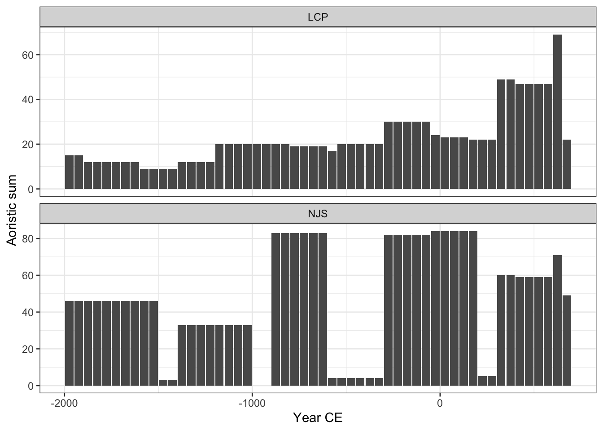
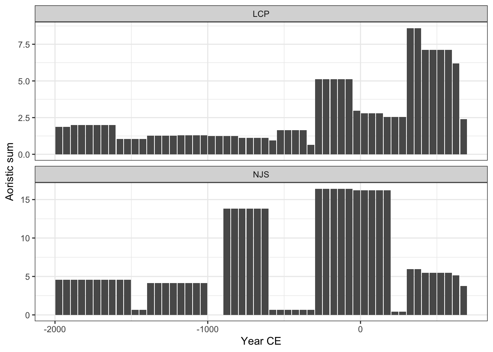
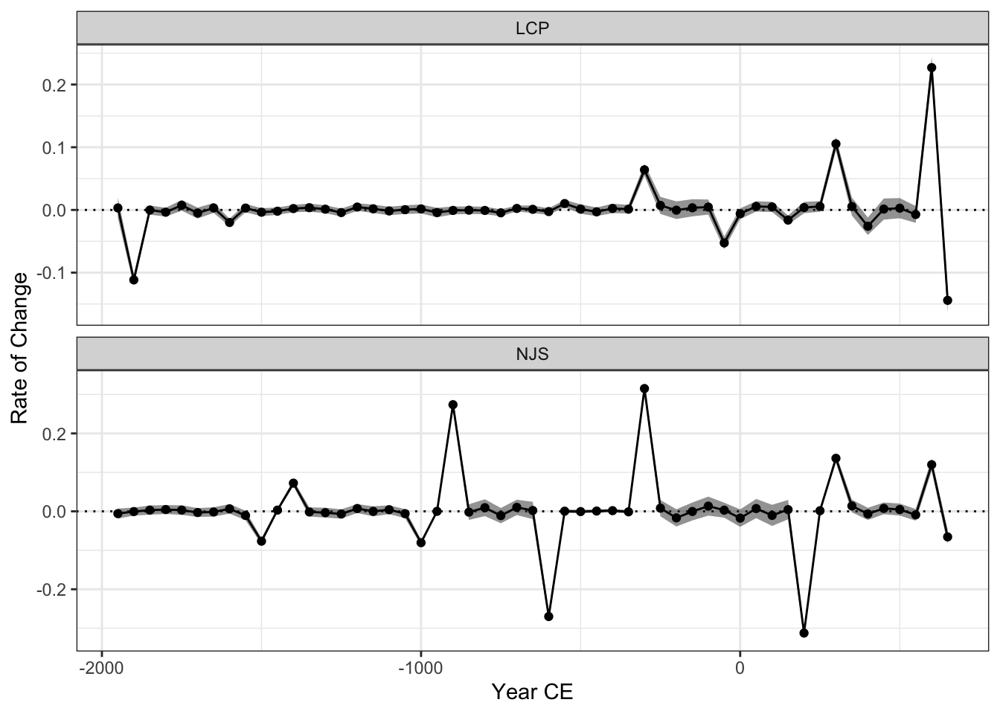

Code
library(sf)
library(kairos)
library(stringr)
library(dplyr)library(sf)
library(kairos)
library(stringr)
library(dplyr)n_mes_sites = st_read("../data/raw/north_mesopotamia_sites.shp",quiet = TRUE ) %>%
janitor::clean_names() %>%
mutate(
code = as.factor(str_extract(id, "[^_]+"))
) %>%
st_drop_geometry() %>%
mutate(
from = start_date,
to = end_date
) %>%
filter(code == "NJS" | code == "LCP")Aoristic Sum as number of sites in the block
# site count
aorist_sum = aoristic(n_mes_sites,
start = -2000,
stop = 700,
step = 50,
weight = FALSE,
groups = n_mes_sites$code)
kairos::plot(aorist_sum)
Aoristic Sum weighted by the length of periods
aorist_sum_w = aoristic(n_mes_sites,
start = -2000,
stop = 700,
step = 50,
weight = TRUE,
groups = n_mes_sites$code)
kairos::plot(aorist_sum_w)
Rate of Change (non-weighted sum)
roc = kairos::roc(aorist_sum)
kairos::plot(roc, n = 99)